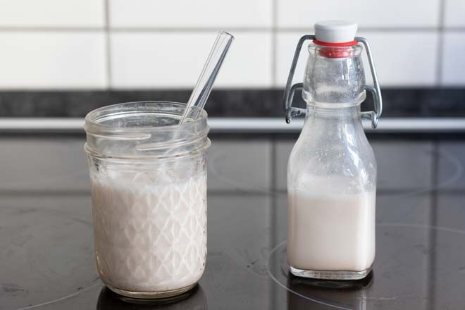
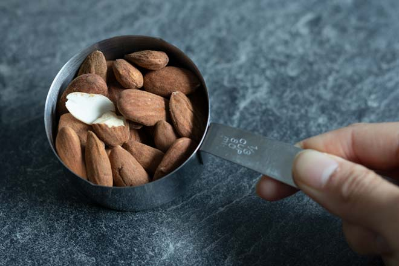
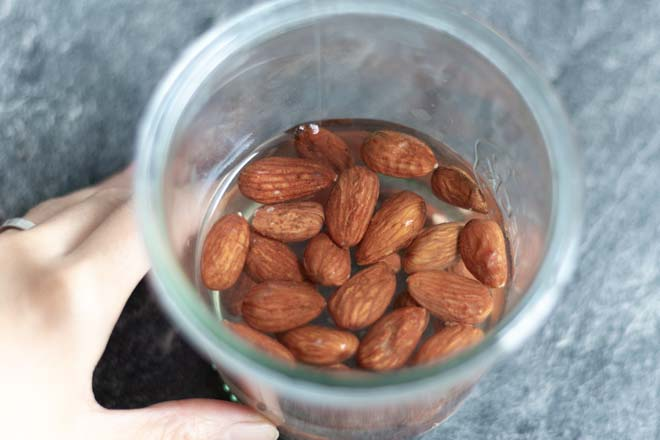
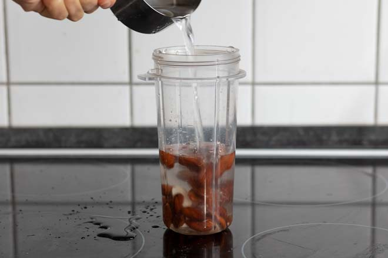
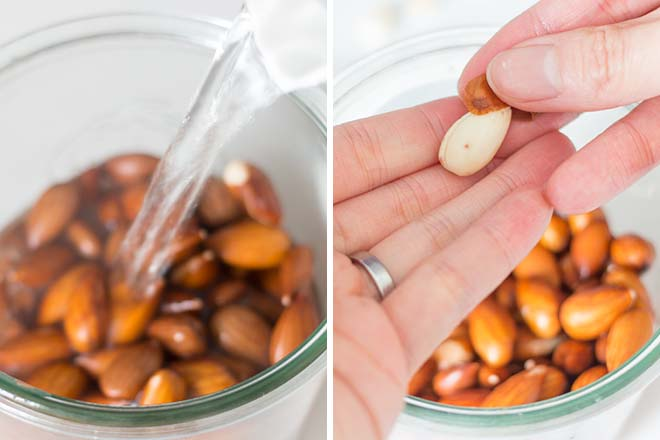
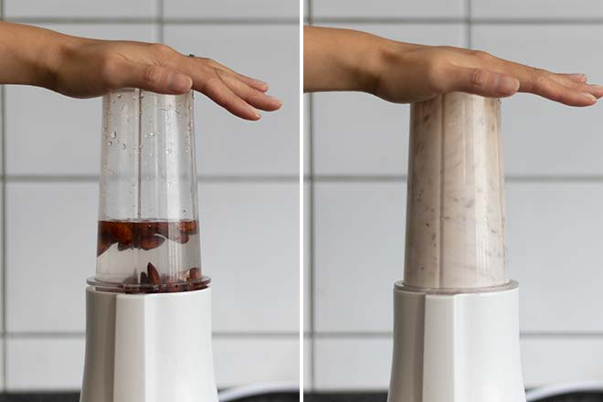
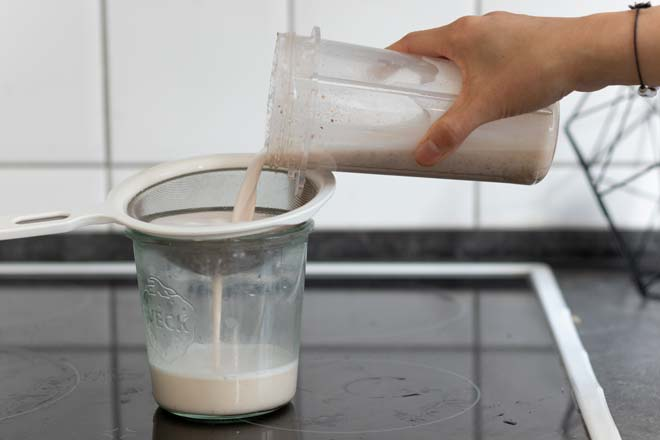
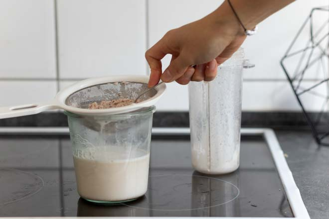
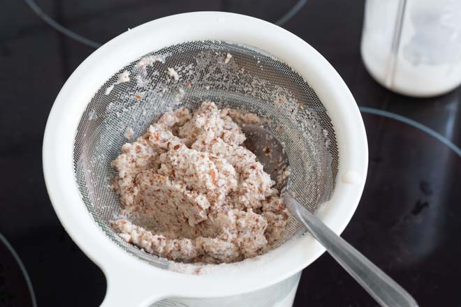
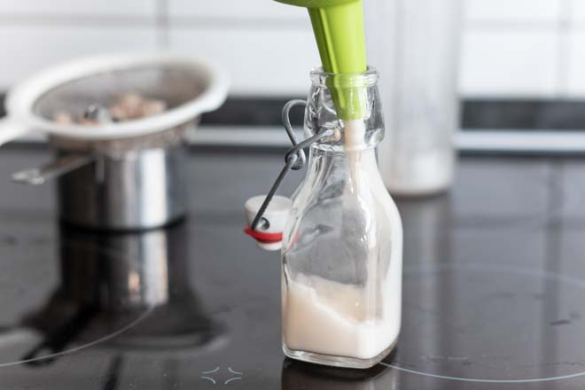

How to Make Almond Milk

Here’s what you need to know about homemade plant-based milks
- Homemade plant-based milks taste different from their store-bought counterparts. This is especially true for soy, rice, and oat milk, because they are highly processed products. Most people don’t like the either more intense or comparably bland taste of homemade soy, rice, or oat milk. However, nut milks usually taste a lot better homemade, which is why I recommend them over the other options.
- Homemade mylks will naturally separate (except for soy milk). This is nothing to worry about, just give it a good shake or stir.
- Homemade mylks will last for 3-4 days in the fridge, because they don’t contain any preservatives. However, making them is quick and easy, so we always make them fresh and never store them.
- The better your blender, the creamier your mylk. That’s because your blender will be able to grind your nuts (or any other base) into smaller particles.
How to Make Almond Milk
You can swap the almonds in this recipe for other nuts, e.g. hazelnuts, cashews, or walnuts!
YOU’LL NEED
- 1/3 cup of almonds, bought in bulk of course 😉
- 1 cup of water
- A blender
- A very fine strainer, a nutmilk bag, or a muslin
INSTRUCTIONS
- Soak almonds for at least 4 hours or over night, unless you have a high performance blender like a Vitamix or Blendtec. If you don’t know if your blender classifies as a high performance blender, it most likely does not 😉. 
- Rinse the almonds and put them in the blender. Add water. 
- If you want to, you can also peel them before you blend them. Pour some boiling hot water over them, wait for a minute, drain and rinse them with cold water. Simply squeeze them with your fingers and they should slide right out of their skin. However, leaving the skin on will make your almond milk taste nuttier. 
- Blend for 15 to 60 seconds, depending on how good your blender is. Tip: You can add the water in two batches if your blender doesn’t handle nuts well. 
- Now strain the almond milk using either a fine strainer, a nutmilk bag, or a muslin. 
- Squeeze the milk out, either using a spoon if you’re using a strainer like I do, or by bunching up your nutmilk bag or the cloth. 
- The pulp (or almond meal) can be dried and dried and used as almond flour, or you can simply add it to your morning bowl of cereals or any cake batter you like. By the way… We only strain our mylks when we have guests over. 😉 
- As you can see, making almond milk can be very quick and easy, especially if you have a high performance blender so the almonds don’t need to be soaked and you can’t be bothered to strain your milk *ehem*. So we usually just make a fresh batch whenever we need some mylk. But if you want to make a bigger batch, you can pop it into the fridge and it will last for 3-4 days. 
아몬드 우유 만드는 법
집에서 만드는 plant-based 우유에 대해 몇가지 알려드릴게요.
- 집에서 만든 우유는 가게에서 산 우유와는 맛이 다릅니다. 콩, 쌀, 귀리 우유는 가공성이 높은 제품이기 때문에 특히 그렇습니다. 대부분의 사람들은 집에서 만든 콩, 쌀, 귀리 우유의 더 강렬한 맛을 좋아하지 않습니다. 하지만, 견과류 우유는 보통 집에서 만든 것이 훨씬 더 맛이 좋기 때문에 다른 재료들보다 견과류를 추천합니다.
- 집에서 만든 우유는 자연적으로 분리됩니다(두유 제외). 이것은 자연적인 현상으로, 드시기전 흔들어 드세요.
- 집에서 만든 우유는 방부제가 들어 있지 않기 때문에 유통기한은 냉장고에서 보관할 시 3~4일입니다. 하지만, 만드는 것은 시간이 안걸리고 쉽기 때문에, 보관하지 않고 새로 만들어 드시는 것을 권장합니다.
- 블랜더를 이용할 시 더 부드러운 우유를 만들 수 있습니다. 블랜더는 견과류를 더 작은 입자로 갈 수 있기 때문입니다.
아몬드 우유 만드는 법
이 요리법에 나오는 아몬드를 헤이즐넛, 캐슈넛, 호두와 같은 다른 견과류와 바꿀 수 있습니다!
필요한 재료
- 아몬드 1/3컵, 저는 대량구매한 것을 사용할게요 😉
- 물 1컵
- 블랜더
- 아주 미세한 거름망, 견과류 가방 또는 무슬린 천
만드는 순서
- 비타믹스나 블렌드텍과 같은 고성능 믹서가 아니시면 아몬드를 적어도 4시간 또는 하룻밤 이상 불려서 사용하세요. 만약 믹서가 고성능 믹서인지 모르시겠다면, 그것은 거의 그렇지 않을 것입니다 😉.
- 아몬드를 헹구고 믹서기에 넣으세요. 그리고 물을 부으세요.
- 원한다면 섞기 전에 껍질을 벗기셔도 됩니다. 뜨거운 물을 그 위에 붓고, 잠시 기다렸다가 물기를 빼고 찬물로 헹굽니다. 손으로 짜시면 껍질이 벗겨질거에요. 껍짓을 벗기지 않으시면 견과류 맛이 더 날것입니다.
- 믹서기 성능에 따라 15초에서 60초 동안 갈으세요. tip: 잘 갈리지 않으면 물을 추가해서 갈아주세요.
- 이제 아몬드 우유를 미세한 거름망 등을 사용하여 걸러주세요.
- 거름망을 쓰시면 숟가락으로 우유를 짜거나, 견우유 가방이나 천을 사용하시면 뭉쳐서 우유를 짜내주세요.
- 펄프는 말려서 아몬드 밀가루로 사용할 수도 있고, 아침의 시리얼 그릇이나 마음에 드는 케이크 반죽에 간단히 첨가하여 사용할 수 있습니다.
- 보다시피 아몬드 우유를 만드는 것은 매우 빠르고 쉬운데, 특히 고성능 믹서가 있으면 아몬드를 물에 담글 필요가 없습니다.. 그래서 저는 보통 아몬드우유가 필요할 때마다 새로 만듭니다. 하지만 더 큰 용량을 만드신다면 냉장고에서 3~4일까지 보관가능합니다.